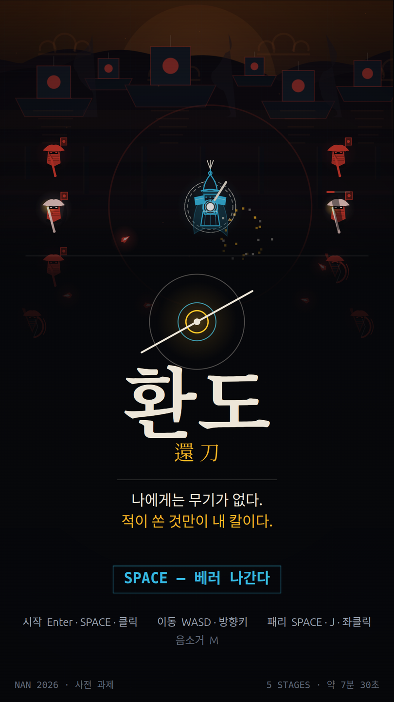
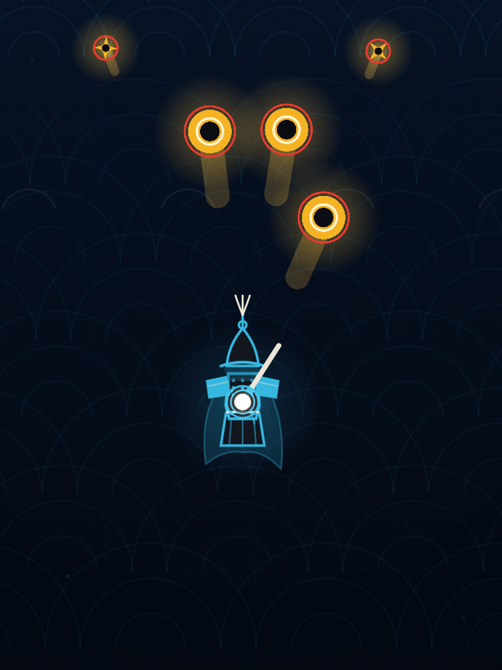
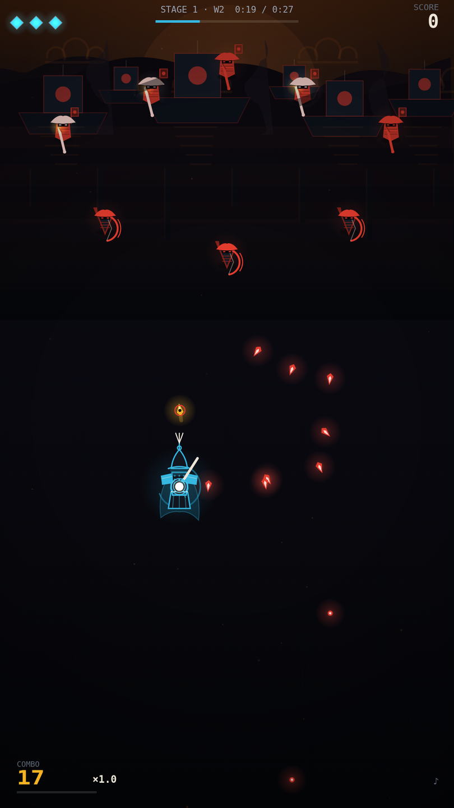
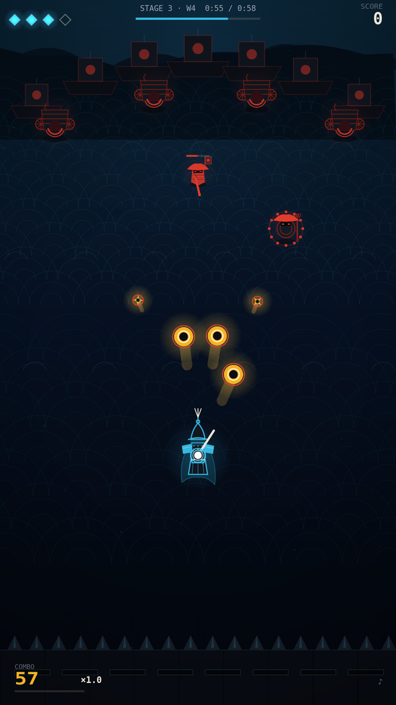
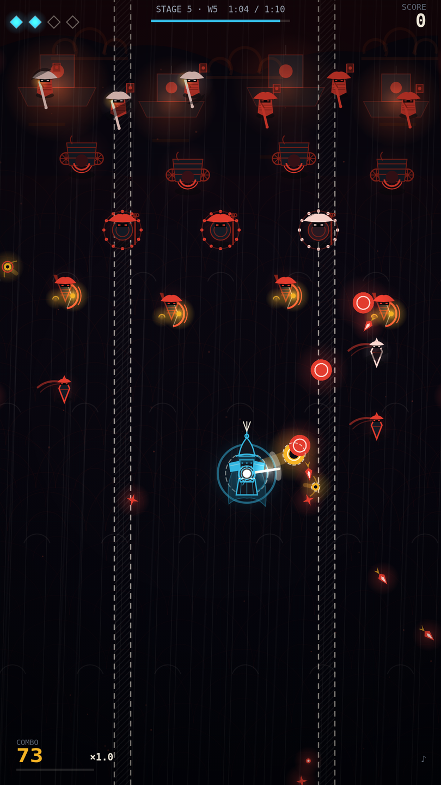
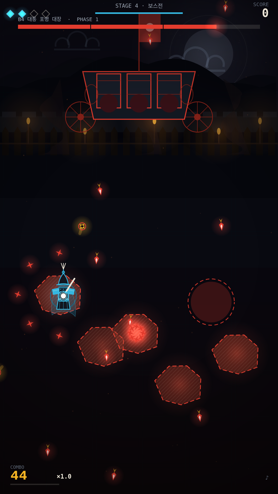
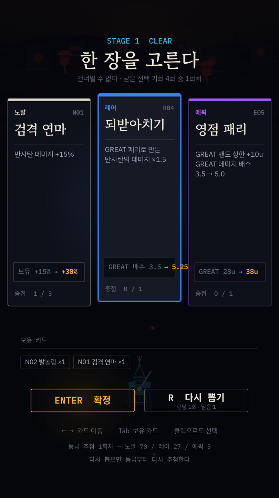
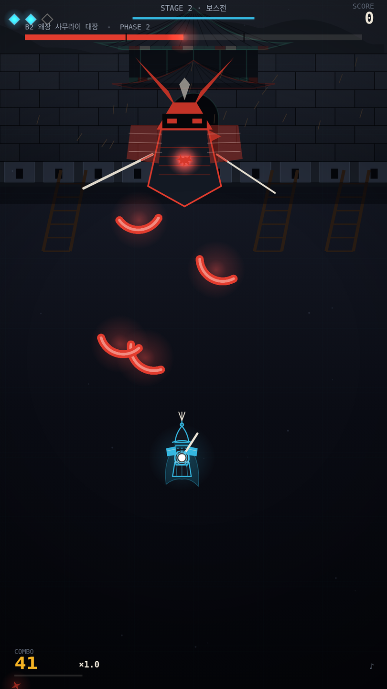

나에게는 무기가 없다.
적이 쏜 것만이 내 칼이다.
임진왜란을 배경으로 한 종스크롤 탄막 패리 액션.
공격 버튼이 없고, 적의 탄환을 되받아친 반사탄만이 적을 죽인다.


탄막 슈팅의 화면에 공격 버튼이 없다. 적이 쏜 것을 되받아치는 것이 유일한 공격이다.
위에서 적이 내려오고 탄환이 쏟아진다. 화면은 종스크롤 슈팅인데 쏘는 버튼이 없다.
패리 버튼을 누르면 플레이어 주위에 원이 0.15초 동안 열린다. 그 안에 들어온 적 탄환은 소유권이 뒤집혀 반사탄이 되고, 튕겨나간 방향에 있는 적에게 피해를 준다. 적을 죽이는 방법은 이것뿐이다. 그래서 적이 쏘지 않으면 이길 수 없고, 탄막이 짙어질수록 쓸 수 있는 탄약이 많아진다.
모든 웨이브에 원거리 공격을 하는 적이 반드시 한 기 이상 들어가고, 적 탄환이 화면에서 사라진 상태가 2초를 넘지 않는다. 탄약 공급이 끊기는 구간을 규칙으로 막아 둔 것이다.
1592년 부산진 앞바다에 왜선이 닿는 새벽에서 시작해 동래성 성곽, 한산도 앞바다, 행주산성 야전을 지나 노량 밤바다에서 끝난다. 사료에 남은 무기와 함선의 이름을 그대로 쓴다. 조총과 편전, 신기전과 대통, 아타케부네와 거북선이 각자 다른 탄환과 다른 대응을 가지고 나온다. 특정 작품이나 IP를 참조하지 않았다.
적색 — 적 탄환과 적 본체. 닿으면 라이프가 하나 줄어든다.
황색 — 반사탄. 내가 만든 데미지이면서 나에게도 유효하다.
청색 — 플레이어와 패리. 가운데 흰 점이 실제 피격 판정이고 항상 보인다.
백색 점선 — 예고 표시. 착탄 원·관통선·돌진선 셋뿐이다.
사선 해칭 — 패리 불가. 색이 아니라 형태로 구분한다.

전투 중 쓰는 키는 이동과 패리 둘뿐이다. 나머지는 화면 전환과 정보 확인용이다.
| 전투 중 | 키보드 | 마우스 |
|---|---|---|
| 이동 | W A S D 또는 방향키 | — |
| 패리 | Space 또는 J | 좌클릭 |
| 보유 카드 보기 | Tab 누르고 있는 동안 | — |
| 음소거 | M | — |
| 일시정지 | Esc | — |
이동과 패리는 어떤 조합으로도 동시에 들어간다. 보유 카드를 보는 동안 게임은 멈추지 않는다. 카드 선택 화면은 ← →로 고르고 Enter로 확정하며 R로 한 판에 한 번 다시 뽑을 수 있다. 키 리매핑은 없다.
패리가 성립한 순간 탄환 중심과 플레이어 중심 사이의 거리로 등급이 갈린다. 아래 도해의 단위 u는 화면 해상도와 무관한 게임 내부 좌표이고, 플레이필드 전체가 1080u × 1920u다.
피격 판정은 가운데 반경 20u 코어 한 점이므로 스프라이트가 스쳐도 맞지 않는다. 그래서 느리고 큰 탄환은 몸으로 받아내는 감각이 되고, 작고 빠른 탄환은 스쳐 지나가기 직전에 쳐내는 감각이 된다.
패리 원은 0.15초 열려 있고 쿨다운은 0.24초다. 초당 네 번까지 누를 수 있으므로 사실상 난사가 가능하다. 그런데 무적은 패리가 성립했을 때만 0.14초 붙는다. 빈 패리에는 아무 보호가 없다. 탄환이 실제로 오는 자리에서 눌러야만 이득이 있다.
라이프가 하나 줄고, 주위 반경 280u의 적 탄환이 함께 사라진다. 1.5초 무적이 붙어 그 동안 아무것도 나를 해치지 못하며 패리는 정상 동작한다. 콤보만 0으로 돌아간다.
맞았을 때 지워지는 것은 적 탄환뿐이다. 반사탄은 내 자산이므로 그대로 남는다. 나를 맞힌 반사탄 하나만 사라진다.
정확히 받으면 곧게 돌아가고 데미지도 오른다. 두 보상이 같은 방향을 가리킨다.
반사 방향은 거울 반사와 같다. 탄환을 몸 정면으로 받으면 들어온 길을 그대로 되짚어 쏜 적에게 돌아가고, 원의 가장자리로 스치게 받으면 크게 꺾여 옆으로 날아간다. 조준은 버튼이 아니라 서 있는 자리가 한다.
정확할수록 곧게 돌아가고 정확할수록 데미지가 크므로, 위치를 잘 잡는 이유와 타이밍을 잘 맞추는 이유가 하나로 합쳐진다.
원 안에 든 탄환은 전부 각자의 거리로 등급을 받는다. 다섯 발이 동시에 들어오면 다섯 발이 동시에 되돌아간다. 오른쪽 화면이 그 순간이다.
반사탄은 다시 패리할 수 있고 횟수 제한이 없다. 다시 칠 때마다 데미지와 속도가 누적된다. 다만 반사탄을 쫓는 동안 적 탄환은 방치되고, 반사탄 자체가 나를 죽일 수 있다.

패리로 해결할 수 없는 공격이 셋 있다. 화염 장판, 관통 대창, 그리고 적 본체다. 이 셋은 회피만이 답이고, 그래서 이 셋에만 예고 도형이 붙는다. 일반 탄환에는 궤적선도 조준선도 그리지 않는다.
규칙은 한 문장으로 압축된다. 예고 도형이 보이면 피하고, 안 보이면 받아친다. 화면 전체를 덮는 패리 불가 공격은 존재하지 않으므로 언제나 피할 자리가 남아 있다.
| 패리 1발 | 50 · 150 · 400 |
| 재패리 | 등급 점수의 50% |
| 보스 페이즈 전환 | 2,000 |
| 보스 격파 | 10,000 |
| 스테이지 클리어 | 남은 라이프 × 2,000 |
콤보는 10마다 배수가 0.1씩 올라 최대 ×3.0이 된다. 마지막 패리 후 3초가 지나거나 한 번 맞으면 0이 된다.

다섯 스테이지, 보스 다섯, 카드 네 장. 죽으면 처음부터. 중간 저장은 없다.
| # | 스테이지 | 길이 | 이 스테이지가 가르치는 것 |
|---|---|---|---|
| 1 | 부산진 새벽 | 70초 | 패리 입력과 등급. 정면으로 받으면 되돌아간다 |
| 2 | 동래성 성곽 | 85초 | 방패병. 정면이 막히므로 각도를 튼다 |
| 3 | 한산도 앞바다 | 90초 | 느리고 큰 함포탄. 고등급 한 발이 여러 기를 정리한다 |
| 4 | 행주산성 야전 | 95초 | 화염 장판. 패리로 지울 수 없는 위협과 공간 관리 |
| 5 | 노량 밤바다 | 110초 | 앞의 넷을 동시에. 새로 배우는 것은 없다 |


조총 방진 대장, 왜장 사무라이, 아타케부네 기함, 대통 포병 대장, 총대장 기함. HP가 임계값에 닿으면 페이즈가 바뀌고 패턴 묶음이 통째로 교체된다. 아타케부네는 포문 네 기를 따로 부술 수 있어 무엇을 먼저 없앨지 고르게 된다.
카드는 31종이고 노말·레어·에픽 세 등급이다. 반사탄의 데미지, 개수, 관통, 유도 같은 것을 바꾸며 겹쳐 쌓인다. 라이프는 5로 시작해 다섯 스테이지를 관통하고 클리어로 회복되지 않는다. 0이 되면 스테이지 1부터 다시 시작하고 카드는 전부 사라진다.
설치할 것은 Node.js 하나다. 명령 두 개면 브라우저에서 열린다.
| 필요한 것 | 요구 사항 | 확인하는 방법 |
|---|---|---|
| Node.js | 20.19 이상 또는 22.12 이상. 22 LTS 권장 | node -v |
| npm | Node.js를 설치하면 함께 깔린다 | npm -v |
| 브라우저 | Chrome 또는 Firefox 최신 버전 | — |
| 입력 장치 | 키보드. 모바일·태블릿은 지원하지 않는다 | — |
| 디스크 | 약 90 MB | — |
| 인터넷 | 처음 한 번만. 그 뒤로는 오프라인에서 돌아간다 | — |
Node.js가 없으면 nodejs.org에서 LTS 버전을 받아 설치한다. 설치가 끝나면 터미널을 새로 열고 node -v를 실행한다. v22.14.0처럼 숫자가 나오면 준비가 끝났다.
타이틀 화면이 뜬다. Space를 누르면 시작한다. 서버를 끌 때는 터미널에서 Ctrl + C를 누른다.
코드와 그림이 전부 그 파일 안에 들어간다. 서버 없이 더블클릭해서 열어도 돌아간다. 게임을 다른 사람에게 넘길 때 이 파일 하나만 보내면 된다.
완주에 7분 30초가 걸린다. 그만큼 앉아 있기 어려우면 타이틀·일시정지·카드 선택 화면에서 Shift + F9를 누른다. 스테이지 1~5, 진입 지점, 라이프, 카드 31종을 직접 지정할 수 있다. 스테이지 5의 보스 직전으로 들어가면 최종 보스를 바로 볼 수 있다.
전투 중에는 위 메뉴가 열리지 않는다. Esc로 멈춘 뒤 누른다. 한 번이라도 연 판은 오염된 런으로 표시되어 정상 플레이와 섞이지 않는다.
빌드가 성한지 직접 확인하려면 아래 셋을 돌린다. 테스트는 511건이다.
흔히 걸리는 다섯 가지와, 무엇이 어디에 있는지.
| 증상 | 원인과 조치 |
|---|---|
| command not found | Node.js가 없거나 터미널이 옛 환경을 들고 있다. 설치한 뒤 터미널을 새로 연다 |
| Port 5173 is already in use | 다른 프로그램이 그 포트를 쓰고 있다. npm run dev -- --port 5200처럼 다른 번호를 준다 |
| 화면이 검다 | 브라우저를 새로 고친다. 그래도 검으면 F12 콘솔의 첫 줄을 확인한다 |
| PC 브라우저에서 열어 주세요 | 정밀 포인터를 못 찾은 것이다. 그 화면에서 아무 키나 누르면 판정이 뒤집히고 시작된다 |
| 소리가 안 난다 | 브라우저 정책상 첫 입력 전에는 소리가 나지 않는다. M으로 음소거 상태를 확인한다 |
| src/ | 게임 코드 138파일. 스테이지·적·보스·카드의 수치는 전부 config/에 있다 |
| tests/ | 단위 테스트 511건, 화면 회귀 비교, 성능 측정 |
| docs/spec/ | 기능 명세서. 규칙과 수치의 원본 |
| docs/ | 인게임 화면 15장. index.html을 브라우저로 열면 목록이 나온다 |
| docs/plan/ | 구현 기획안 13종 |
| docs/work_log/ | 실제로 만든 것과 남은 것의 기록 |
| README.md | 이 문서의 짧은 판과 명령 목록 |
